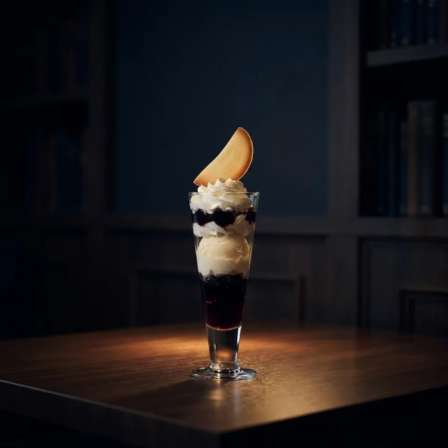

三日月の夜パフェ
¥1,680
カシスのジュレとバニラアイスを重ね、焼きたての三日月クッキーをひとかけ。
CONCEPT
壁いっぱいの本と、手で淹れるコーヒー。TSUKIYOMIは、仕事帰りに寄り道できる「夜のための図書室」です。急がなくていい時間を、月がのぼる頃からお届けします。
窓辺のカウンターで、読みかけの一冊と。本は店内で自由に読めます。
ランプの灯るテーブルで、夜パフェを分け合いながら、ゆっくり話す。
ONE CUP
夜に合わせて、深めに焙煎した豆を一杯ずつ、手で淹れます。
立ちのぼる湯気を眺めるのも、ここでの時間のひとつです。
SIGNATURE

¥1,680
カシスのジュレとバニラアイスを重ね、焼きたての三日月クッキーをひとかけ。
¥980
青から金へ、夜空のように色が変わるノンアルコールのソーダ。

¥720
夜に合わせて深めに焙煎。カフェインレスにも変えられます。
MOON CALENDAR
おおよそ1週間ごとに、月のかたちに合わせた一皿が登場します。次の月には、なにがあるでしょう。
SPACE
夜の街を眺めながら。読書や考えごとに。（6席）
小さなランプが灯るテーブル。会話がしやすい距離です。（8卓）
3〜4名で、ゆったりと。誕生日や記念日にも。（2卓）
MOON STAMP
ご来店ごとに、月をひとつ。8つそろうと、満月の夜パフェをプレゼント。
ACCESS